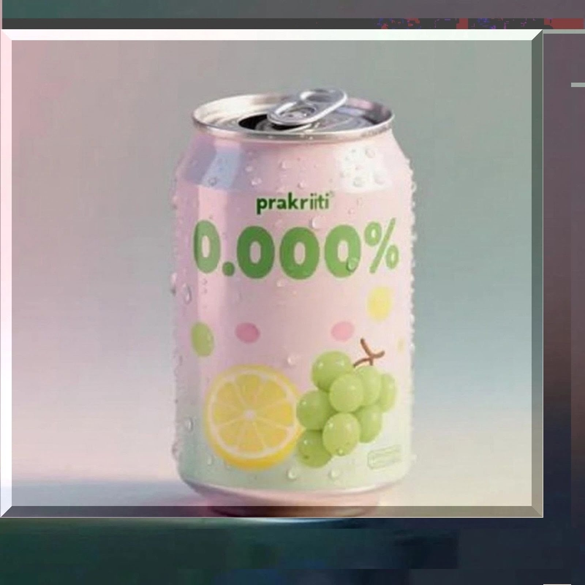

0.000%
lyrics
0.000%
酔わずに語る夢に 乾杯
0.000%
まだまだ薄める どこが限界
負けないだけの 似非リアリスト
のどごしだけの リアルテイスト
味気ないけど 正しいね
積みあげて消えない テトリスと
薄めるだけの 適当なお仕事
つまらないけど 正しいね
薄めて 薄めて 薄めて remedy
ゲンエキはなんだったっけ
薄めて 薄めて 薄めて remedy
見えない正義とかだったっけ
0.000%
天然由来の それ以外
0.000%
いったいそれ 何入ってんだ
0.000%
安心 無添加 無香料
0.000%
ニオイがするなら 吸ってんだ
ノンカロリーで 糖質ゼロ
無難にまとめたプロンプト
すばらしいけど 怪しいね
誰にもささらない コメント
つぶやくだけの 適当なお仕事
すばらしいけど あやしいね
薄めて 薄めて 薄めて remedy
はじまりって なんだったっけ
薄めて 薄めて 薄めて remedy
原液なんて もう無いのかもね
0.000%
酔わずに語る夢に カンパイ
0.000%
ガチャなら当たるぜ 回すんだ
0.000%
迷わず刺激のない 安牌
0.000%
見えない毒がもう まわってんだ
notes
動物園に行くと免疫がついてアレルギー予防になるとか…。本当かよ。
もちろん科学的根拠なんて無いらしいし、「効果はありまーす」なんて言いきったらいろいろとアレだよね。このコンプライアンスの世の中、誰だって余計な責任は負いたくないもんだ。責任は擦りつけ合い、足は引っ張り合って、リスクをヘッジしていく。楽しく飲酒も、失言もホントは面白いんだけどね。面白いで済まそうよ。
叩かれるより叩きたい？あんまり叩くと返ってくるかもしれないよ。バカって言うやつがバカ。これ名言。出る杭は黙って眺めてるくらいがちょうどいいんじゃない？
しかし、このまま本当に賢くなって当たり障りの無いやり取りばっかりしてたらと思うと不安だよ。愛の告白なんてどうすりゃいいのよ。誰かが汚れ仕事を引き受けてるからこそなのにね。無知の知が賢い時代から、知の無知が賢い時代になってるのか。よくわからないけど、そんな気しない？
まあそんな風に、知ってるふりして知らない奴でいいのかもね。ノンリスクでノン本気。酔わずに語る夢にカンパイ!!
って乾杯？それとも完敗？